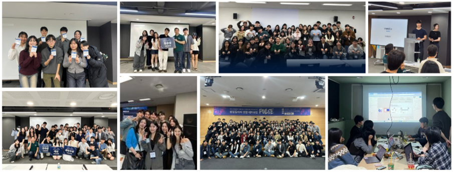
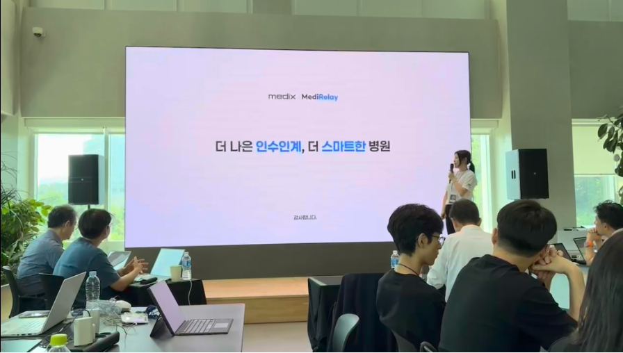
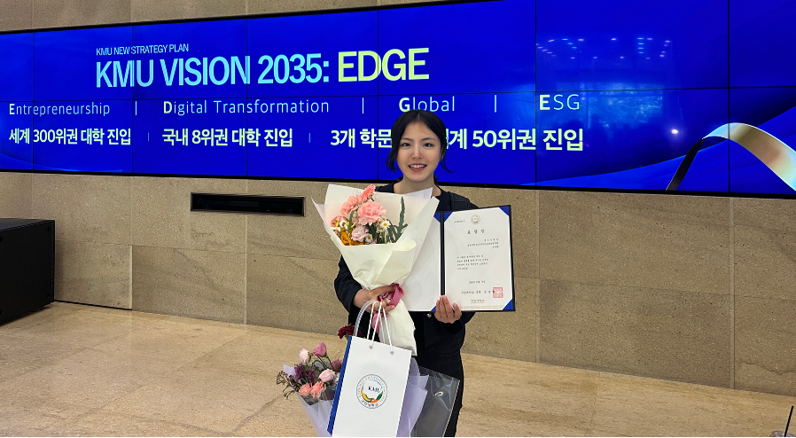

Section
Who I Am

My University Life March 2023 - February 2027 Written Jul 17, 2026
People often ask me, why medical AI? So in this piece, I want to tell the story of everything that led me here, from the very starting point of choosing this path to the four years of university life that followed. Along the way, I've pulled excerpts from the journals I kept back then, trying to preserve as faithfully as possible the thoughts and resolutions I felt in each of those moments.
From a humanities-track foreign language high school to a dream of medical AI
I wasn't always a student who dreamed of medical AI. Wanting, even in a small way, to help build a better society, I once hoped to become a current-affairs broadcast producer, someone who carries people's stories out into the world. With that goal in mind, I enrolled in a foreign language high school, a humanities-focused school. I believed that if I learned languages and understood society, I could change the world. But the moment I started, COVID-19 began to spread. Every day I found myself watching disease outbreaks being forecast, risk being explained through numbers, and society being moved by data. In that process, I came to truly grasp, for the first time, that big data and artificial intelligence were not abstract technologies but tools directly tied to human life. The realization that the social problems I had only vaguely dreamed of solving could be addressed not with words but with data and models left a strange yet powerful impression on me. That was when I first began to take an interest in the field of medical AI.
In my final year of high school, I wrote a report on a big-data-based integrated global health and medical system, and through it I arrived at the conviction that combining medicine and data could fundamentally transform human health. Even as I studied language and society at my foreign language high school, I grew more and more captivated by the possibilities that open up when medicine and technology meet. I began searching nationwide for AI-related majors that a humanities-track student could enter, and that search is what led me to the university I ultimately attended.

Even after I started university, that conviction never wavered. But my school had no medical school, and the road toward reaching medical AI research turned out to be far rougher than I had expected. Rather than accepting that absence as a limitation, though, I took it as a reason to carve out my own path. And so my challenge began. I joined an inter-university healthcare startup club and started interacting with students from medical fields such as medicine and pharmacy. Exchanging ideas with those students gave me more clinical insight, and through that I earned chances to deliver IR pitches and introduce myself before judges, investors, accelerators, and experts from the clinical field. Countless rounds of feedback made me keenly aware of my own shortcomings, but rather than stopping me, all of those experiences pushed me one step further forward.
A first start at university, and expanding outward
In 2025, I won the top prize at my university's College of Business Administration startup competition. It was the result of fusing a management-based problem definition with AI technology to propose a business model that could resolve real inefficiencies in clinical settings. After that, I didn't want to stay within the walls of my school; I wanted to test my potential on a bigger stage. As my first step, I entered the Chuncheon City Generative AI Idea Competition as an individual and won an award of excellence. Being recognized for technical completeness and practical value in a competition hosted by a local government, beyond just my campus, made me feel that my challenge was expanding to a new level.
Next, I took part in the 9th Digital Healthcare MEDICAL HACK, where I won the grand prize (Pusan National University President's Award). Over a tight span of just two days and one night, I had to build a medical AI service focused on solving real clinical problems, drawing on on-site mentoring. I ran into technical errors and limitations under the demanding schedule, but I made the call to prioritize clinical usefulness over raw performance metrics, and that choice was viewed favorably in the final evaluation. In particular, I was highly credited for developing my plan with the hospital environment in mind, and I think it was from this point on that I began studying real hospital settings more seriously.
I also won the grand prize at the Konyang Health Datathon, hosted by Konyang University Medical Center. Traveling back and forth between Seoul and Daejeon, I carried out the work inside a medical data safe zone, striving to maintain the quality of my project to the very end among graduate students and medical students. Taking the 6 a.m. KTX down to Daejeon and developing inside the hospital's closed network from the moment the data safe zone opened until it closed was mentally exhausting. On the road, I would catch quick naps, or, unwilling to waste even that time, read papers and work on side projects aboard the train. Looking back now, I think that experience was more than just a period of technical growth; it was a process in which I trained my own persistence and focus, my ability to push through to the end. It was also the first time I truly learned to put responsibility ahead of my emotions or physical condition in order to deliver results. On top of that, a photo I took with a professor who served as a judge at this competition became the connection that later let me greet him again at the Korean Society of Medical Informatics conference. Through the experience of one challenge expanding into another encounter and another lesson, I was reminded once again that in medical AI, the relationships and networks too are something I have to build myself.
Taking on national startup tracks
After these competitions, I didn't want to rest on the achievements I'd earned within my school; I wanted to step into the wider startup ecosystem. On a team led by a clinical-year medical student, I served as the lead AI developer, personally driving the entire medical AI startup project, from planning to model development to real-world validation. Aiming for field-driven problem-solving, I designed a speech-to-text model optimized for the spoken language of nurses, a ward handover automation system, and a medical summarization model, and I set out to verify their applicability in actual hospital environments. Through this, I learned that technology gains meaning not merely by working, but only once it can actually be used in the field.
Building on these experiences, our startup team took on bigger stages. We were selected as finalists in succession for the Seoul AI Hub's Seoul AI Young Track, Yonsei University's Y-Compass student startup team, and the Ministry of Education's Promising Student Startup Team U 300+, giving us a taste of national-level startup incubation tracks. In each program, we completed hands-on training in medical data ethics, technical validation methods, IR pitching, and more, and I gained the chance to grow not into a mere idea-proposer but into a field-oriented entrepreneur. I held onto my conviction to solve hospital inefficiencies through technology all the way to the end, and that process itself became an experience of practicing the kind of applied innovation the College of Business aspires to.
But this challenge did not always end in success. At the stage of actual hospital validation, I experienced a clear failure. The hospital PoC process held far more constraints than I had anticipated. Data access permissions, security regulations, alignment with clinical processes, and the workflows of medical staff, barriers that technology alone could never overcome all worked together in a complex way. Above all, I had to admit that, at the time, I simply didn't yet have the capacity to push that process through to the end. This failure hit me as a great setback. It was through this experience that I first fully grasped the reality that medical AI is not merely a development problem. This was when I came to deeply understand that medical AI must stand not on the sophistication of an algorithm, but on regulation, ethics, clinical trust, and collaboration with people.

Even so, this experience became the catalyst for a fundamental shift in how I think. I learned that a person who sits still and blames their circumstances cannot grow. So I tried to reach out first, to ask questions, to go seek things out myself. In the process I faced countless rejections, and at the same time I learned the courage to be rejected. Through this startup challenge, I came to understand, viscerally, that there is no growth without rejection, and that if you fear failure and the eyes of those around you, you can never begin anything at all. From then on, I began to see entrepreneurship not as a mere side project, but seriously, as an important direction for realizing who I am. Failing at hospital validation was a moment that confirmed the limits of my abilities, but it was also a signpost that clearly showed me what I needed to learn and prepare for next. This challenge left me with something greater than success would have, and it became the starting point that carried me toward research, clinical datathons, and the stage that came after.
A leap into research
The university I attended has no medical school and no affiliated hospital. At first, I too wrestled with it. Did that mean I could never, as an undergraduate, get close to medical AI research? But I soon reached a conclusion: if no one had paved a road, I would have to build one myself. From that point on, I began my research without relying on an advisor or a lab, armed with nothing but my own sense of the problem. Even obtaining medical data was no easy task; I had to rewrite my code countless times, and I had to teach myself paper structure and research methodology as well. The trial and error repeated itself again and again, but through that very process I was able to learn the attitude and posture of doing research. In the end, this led to three self-initiated studies being accepted as posters at major domestic conferences.
An Explainable Framework for Diabetic Retinopathy Classification Using Fundus Image Preprocessing and Visual Explanations - Annual Conference of the Korean Society of Medical Artificial Intelligence (2025)
Improving the Reliability of PPG-Based Respiratory Rate Estimation: SQI/SNR Gating and Conformal Prediction Intervals - Fall Conference of the Korean Society of Medical Informatics (2025)
These achievements carried meaning far beyond the simple fact that posters were hung in a conference hall. They were the moment that proved even an undergraduate, if they define their own problem and carry out their own research, can stand at the center of medical AI research. It was a journey of walking alone down a road no one had cleared for me, but on that road I could clearly feel myself growing. On the strength of these experiences, I entered the Seongnam Seoul National University Bundang Hospital medical-record generation datathon as an individual, passed the preliminaries, advanced to the finals, and placed 7th overall. There was some disappointment in the result, but the experience became an important turning point in understanding the gap between clinical data and artificial intelligence.
After that, I took part in the Korea Clinical Datathon 2025 (SNUH × MIT). The event was originally open only to graduate students and above, but I judged that this was the stage most closely aligned with the direction of my own research. I learned that a Seoul National University Hospital professor I had been interested in would be participating as a mentor, and I directly asked the administrative team whether an undergraduate could take part. After submitting my research portfolio and record, I received approval from the panel and was granted official participation, an unusual thing for an undergraduate.
On that stage, shared by researchers from Seoul National University Hospital and MIT, I learned deeply about what responsible medical AI truly is, and about how clinical data must be interpreted and handled. This was not just a hackathon; it was an experience of directly feeling the boundary between the clinical field and technology. On the final day of the event, I went up and greeted the mentor professor in person. Introducing myself as a third-year undergraduate researcher enrolled at Kookmin University may have struck the professor as a somewhat unfamiliar situation, but I didn't want to let that moment slip away. Afterward, I organized my portfolio and CV and sent them by email, and that courage led to a first non-face-to-face interview and a second in-person interview. As a result, I am now continuing my work as a researcher in a lab within the Department of Convergence Medicine at Seoul National University Hospital.
If there's no path, I'll just make one

For Kookmin University's 79th anniversary, I had the honor of receiving the 2025 Kookmin Talent Award directly from the university president, as the representative student recipient. I felt this award was not merely a result, but a response to the process of forging my own path into medical AI even in an environment without a medical school. Through many challenges, I've come to feel in my bones that nothing happens if you just sit still. Every time it felt like there was no path, I ultimately arrived at the same conclusion: then I'll just make one myself. Having no set path certainly comes with anxiety and fear, but it also means you get to decide your own direction. In truth, there were plenty of realistic worries and concerns voiced around me about my choices, and there were people who did not always view my challenges and my legwork through a positive lens.
Even so, I've held onto my dream with the mindset that if a door won't open when you knock, then you go and open it yourself no matter what. Even if the path wasn't easy to earn, I didn't want to give up on a dream I wanted to protect and be responsible for to the very end. Since this life is mine and I only get one, I wanted to walk in a direction I could make peace with, even if I failed. I didn't want to let this chance, one that will never come again, slip by in hesitation and regret. So rather than fearing failure, I chose to give it my all even if I might fail. Instead of safely following a road others had paved, I've chosen the road where, slow and rough as it may be, I can create meaning for myself along the way. And even now, I keep moving forward, one step at a time, standing on those choices.
Balancing undergraduate life with life in the lab
As I mentioned earlier, thanks to my professor's consideration, I'm spending my fourth year balancing undergraduate life with life in the lab, even before graduating. I started reporting to work the very day after the fall semester of my third year ended, and in the first semester of my fourth year I carried a 20-credit course load alongside my lab work. So I'd pack my classes into the mornings, eat lunch, and then head to the lab, repeating that routine day after day. I'm always grateful for the consideration shown to me by my professor and the many others in the lab.
I'm not especially strong physically, so there were plenty of times it wore me down, but I think I got through a whole semester on sheer willpower, pushing through midterms and paper-writing at the same time. Sometimes the research and study in the lab were so much more interesting that my school classes felt like a distraction, so honestly, my coursework came down to little more than attendance and basic learning. That's how much I'm enjoying my research life at Seoul National University Hospital, and I'm pouring a great deal of my current passion into it. But since this piece is meant to be about my university life, I'll save the story of my research life at the hospital for another time.
Balancing coursework with lab life wasn't easy, but it actually became the driving force of my life. After all, I even had the honor of winning a Minister's Award for an app I'd been building on the side as a hobby. Getting through this period, I came to newly appreciate just how important it is to know how to relieve stress and manage your time.
Why medical AI
Finally, I'd like to introduce myself as someone who wouldn't have much reason to study AI at all if it weren't for medical AI. Because medicine is a field that demands a clear licensing structure and a high degree of specialization, there's a distinct risk in diving in as an engineering major. In fact, I've been advised more than once that choosing more general, technology-centered AI research outside the medical domain would be a far safer path. But if the choice of medical AI hadn't existed, I wouldn't have studied AI at all, which is exactly why medical AI has become, for me, more than just a research field: it's a motivation and driving force that shapes the very direction of my life.
The truth is, I haven't been someone with many dreams or goals I could firmly say I wanted to protect. I've never had an especially distinct set of tastes or a strong sense of identity. But medical AI has become, for me, more than a career path. It's become a conviction. I feel it's very nearly the only identity I want to protect. Even if countless labels come to be attached in front of my name someday, I hope the words medical AI will always be the first to come to mind. On the strength of this conviction, I want to keep growing, not into someone who merely builds the technology itself, but into a researcher who understands and solves the real problems of the clinical field.